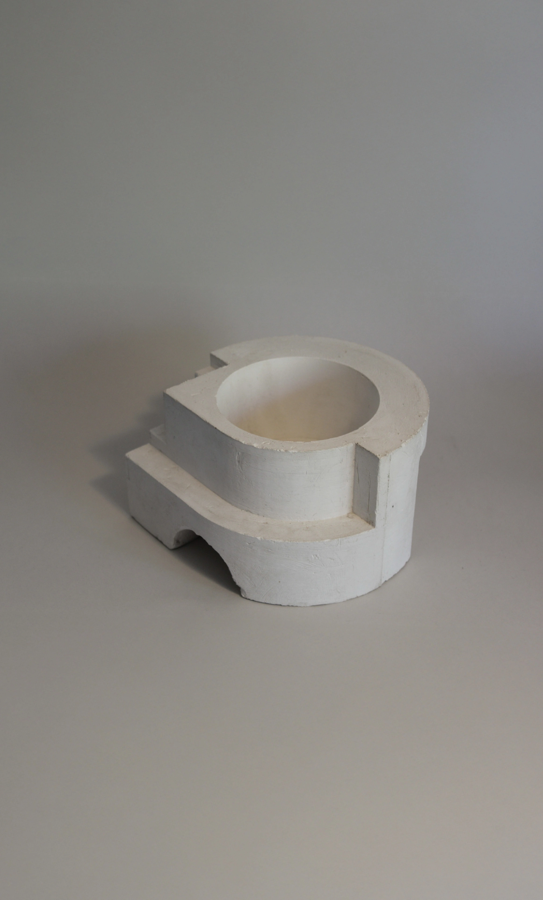
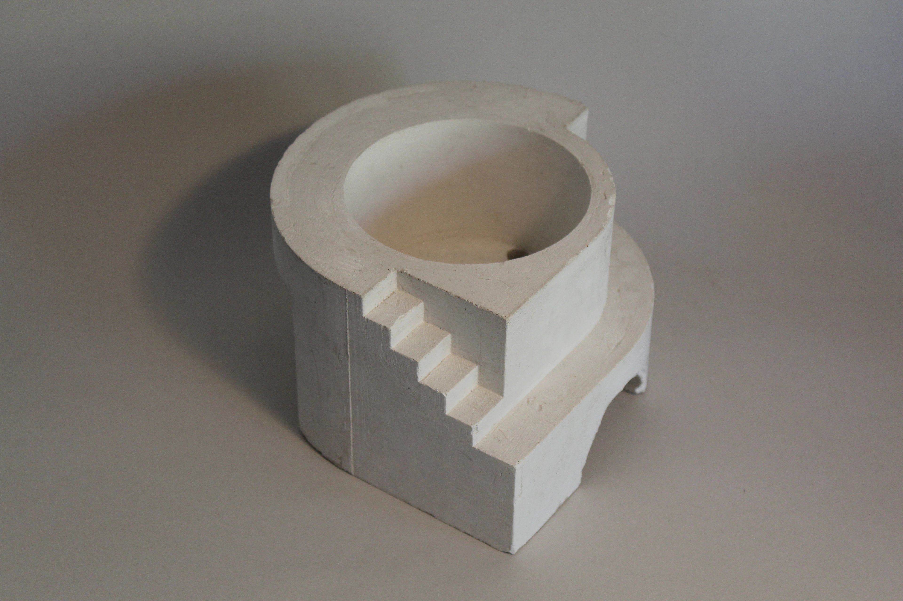

← Volver a proyectos

Maceta rebrote urbano
Moldaje · Fabricación digital · 2024Este proyecto fue desarrollado como evaluación solemne del ramo de Fabricación Digital. Consiste en una maceta inspirada en formas urbanas y geométricas, que primero modelé en Rhino y luego fabriqué a partir de moldes impresos en 3D.
Arrastra el modelo para girarlo y haz clic para pausarlo o reanudarlo.

